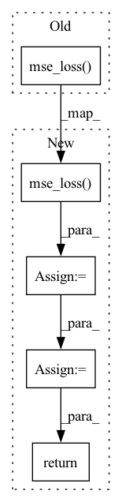

Pattern ID :36140
Before Change
elif self.objective == "v":
target = alpha * noise - sigma * img
return F.mse_loss( pred, target)
// dataset classes
class Dataset(Dataset):After Change
elif self.objective == "v":
target = alpha * noise - sigma * img
loss = F.mse_loss( pred, target, reduction = "none")
loss = reduce(loss, "b ... -> b", "mean")
// min snr loss weight
snr = (alpha * alpha) / (sigma * sigma)
maybe_clipped_snr = snr.clone()
if self.min_snr_loss_weight:
maybe_clipped_snr.clamp_(min = self.min_snr_gamma)
if self.objective == "eps":
loss_weight = maybe_clipped_snr / snr
elif self.objective == "x0":
loss_weight = maybe_clipped_snr
elif self.objective == "v":
loss_weight = maybe_clipped_snr / (snr + 1)
return (loss * loss_weight).mean()
// dataset classes
In pattern: SUPERPATTERN
Frequency: 3
Non-data size: 5
Instances Fragment ID: 102482059
Project Name: lucidrains/recurrent-interface-network-pytorch
Commit Name: 77e4ced5cd8d091acae31ad2cb19a32f64a4eb3a
Time: 2023-03-18
Author: lucidrains@gmail.com
File Name: rin_pytorch/rin_pytorch.py
M Class Name: GaussianDiffusion
N Class Name: GaussianDiffusion
M Method Name: forward(2)
N Method Name: forward(2)
M Parent Class: nn.Module
N Parent Class: nn.Module
M File Name: rin_pytorch/rin_pytorch.py
N File Name: rin_pytorch/rin_pytorch.py
M Start Line: 812
M End Line: 823
N Start Line: 819
N End Line: 850
Before Change
quantize, embed_ind = self._codebook(x)
if self.training:
commit_loss = F.mse_loss( quantize.detach(), x) * self.commitment
quantize = x + (quantize - x).detach()
else:
commit_loss = torch.tensor([0.], device = x.device)After Change
if self.training:
if self.commitment > 0:
commit_loss = F.mse_loss( quantize.detach(), x)
loss = loss + commit_loss * self.commitment
if self.orthogonal_reg_weight > 0:
orthogonal_reg_loss = orthgonal_loss_fn(self.codebook)
loss = loss + orthogonal_reg_loss * self.orthogonal_reg_weight
quantize = self.project_out(quantize)
if need_transpose:
quantize = rearrange(quantize, "b d n -> b n d")
return quantize, embed_ind, loss
Fragment ID: 102482058
Project Name: lucidrains/vector-quantize-pytorch
Commit Name: be2e021bf30d70ec8d709c1ea3ce5ef796a00058
Time: 2021-12-02
Author: lucidrains@gmail.com
File Name: vector_quantize_pytorch/vector_quantize_pytorch.py
M Class Name: VectorQuantize
N Class Name: VectorQuantize
M Method Name: forward(2)
N Method Name: forward(2)
M Parent Class: nn.Module
N Parent Class: nn.Module
M File Name: vector_quantize_pytorch/vector_quantize_pytorch.py
N File Name: vector_quantize_pytorch/vector_quantize_pytorch.py
M Start Line: 293
M End Line: 308
N Start Line: 300
N End Line: 330
Before Change
elif self.pred_objective == "eps":
target = noise
return F.mse_loss( model_out, target)
def forward(self, img, *args, **kwargs):
b, c, h, w, device, img_size, = *img.shape, img.device, self.image_size
assert h == img_size and w == img_size, f"height and width of image must be {img_size}"After Change
elif self.pred_objective == "eps":
target = noise
loss = F.mse_loss( model_out, target, reduction = "none")
loss = reduce(loss, "b ... -> b", "mean")
snr = log_snr.exp()
maybe_clip_snr = snr.clone()
if self.min_snr_loss_weight:
maybe_clip_snr.clamp_(min = self.min_snr_gamma)
if self.pred_objective == "v":
loss_weight = maybe_clip_snr / (snr + 1)
elif self.pred_objective == "eps":
loss_weight = maybe_clip_snr / snr
return (loss * loss_weight).mean()
def forward(self, img, *args, **kwargs):
b, c, h, w, device, img_size, = *img.shape, img.device, self.image_size Fragment ID: 102482067
Project Name: lucidrains/denoising-diffusion-pytorch
Commit Name: e6f2d01d453fc2597881ca477bdd7d545f93490a
Time: 2023-03-17
Author: lucidrains@gmail.com
File Name: denoising_diffusion_pytorch/simple_diffusion.py
M Class Name: GaussianDiffusion
N Class Name: GaussianDiffusion
M Method Name: p_losses(4)
N Method Name: p_losses(4)
M Parent Class: nn.Module
N Parent Class: nn.Module
M File Name: denoising_diffusion_pytorch/simple_diffusion.py
N File Name: denoising_diffusion_pytorch/simple_diffusion.py
M Start Line: 668
M End Line: 678
N Start Line: 675
N End Line: 701